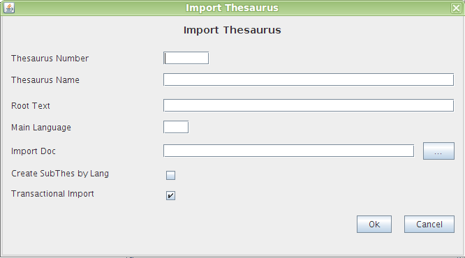

Importa Thesaurus
Yopu should use the menu option "Thesaurus->Import" for importing a complete Thesaurus.
This option Imports from the filesystem a file in the standard format SKOS. created by OopenProdoc o other systems.
Before the process OpenProdoc will show a form for defining diferent aspects of the process. The options to fill are:
- Thesaurus Number: Numeric identifier of the thesaurus. A number between 1 and 999999. It will be used as a reference when defining metadata validated against values in a specific thesaurus
- Thesaurus name: name to asignt to the Thesaurus in OpenProdoc.
- URI Text: it's the test included int the SKOS file as thesaurus referebce. I.e.: '<skos:ConceptScheme rdf:about="http://skos.um.es/unescothes/CS000">'.
The URI will be deleted for obtaining the original Term code and analyze the relations between terms. During the import process, new codes will be generated to avoid duplicates or colissions.
- Main Language: The selected language will be used as default language for the export process. This means that the thesaurus will be scanned using the main language as a guide.
If the structure in every language is identical, the selected language dont affect to the result, but if there are diferences (i.e. the specific terms in a language are different form another) the relations and term to be included willbe different.
- Origin Document: File to be imported.
- Create subthesaur by language: If checked, during the import process a subthesaur will be created for every language, so you can manage the terms in an easier way.
- Transactional Import: If checked, the import process will be in transactional mode, that is, all the term and relations will be imported, or none. it's the recommended way, except if the the thesaurus it's too big or if some minor errors are allowed in order to correct them manuallly.

the process will create the new thesaur and show a html report with the result. If there is an error, the system will communicate the reason for the error.
It should be noted that the SKOS format can be interpreted or suported in different ways(Implementations, Codification ), so the import and export process between systems different of OpenProdoc can be limited, losing part of the information.
Help Index Thesaurus